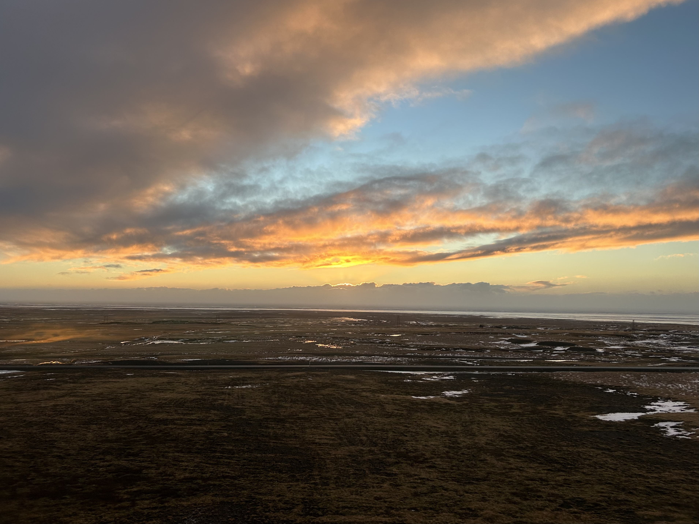

Welcome to my personal website! I am Isaac Edelman, a life long physics student with a passion for astrophysics and engineering.
Feel free to explore and learn more about me and my journey.
. School
. Work
...
In this section, you can find information about my research interests and publications.
Orcid -
https://orcid.org/0000-0001-8745-2613
. Atmospheric Physics
Sonnenfeld, R., Stephan, K., Keul, A., Edelman, I., & Jimenez, S. (2022, November 23). Applying modern meteorological tools to the study of Ball Lightning (Kugelblitz). Authorea. http://dx.doi.org/10.1002/essoar.10505247.1
. Astrophysics
Rodriguez, T. M., Hofner, P., Edelman, I., Araya, D. E., & Rosero, V. (2021, November). Searching for ionized jets from high-mass protostars with Vla Sio observations. NASA/ADS. https://ui.adsabs.harvard.edu/abs/2021anms.confE..15R/abstract
.
Rodríguez, T. M., Hofner, P., Edelman, I., Araya, E. D., & Rosero, V. (2023). Searching for Molecular Jets from high-mass protostars. The Astrophysical Journal Supplement Series, 264(2), 30. https://doi.org/10.3847/1538-4365/aca4c6
...
Here, I showcase some of the exciting projects I've worked on. Explore each project to learn more about the goals,
outcomes, and technologies involved.
. Astrophysics
. Engineering
. Game development
...
Let's have some fun! In this section, I share my hobbies, interests, or any other enjoyable aspects of my life.
. Travel

. Games
...
Interested in reaching out? Feel free to contact me through the following channels:
Email - edelmanisaac@gmail.com
LinkedIn -
linkedin.com/in/isaac-edelman
Github -
https://github.com/isaedelman